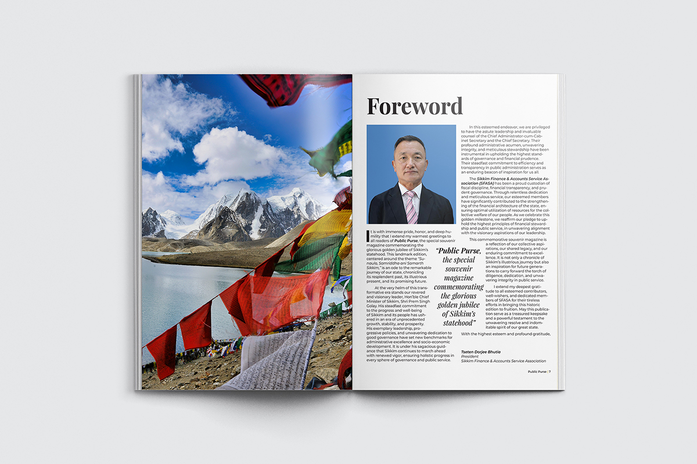
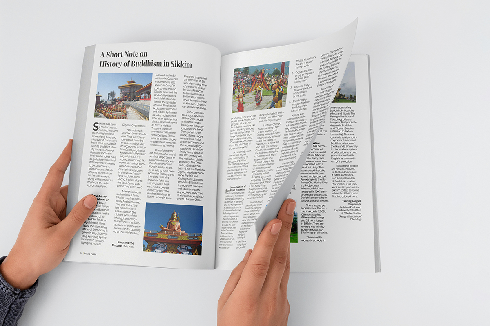
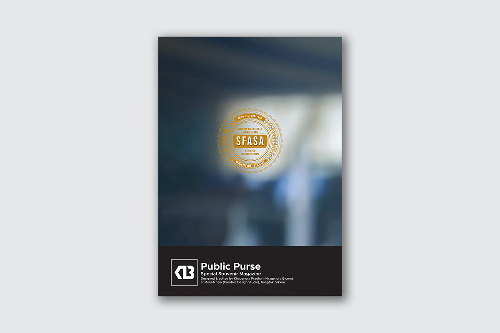

Public Purse
Editorial, Publication, Print Design
About Public Purse
Public Purse is a special souvenir magazine published to commemorate the golden jubilee of Sikkim’s statehood. This landmark edition, themed “Sunaulo Ani Samriddha Sikkim”, pays homage to the state's extraordinary journey — celebrating its glorious history, its vibrant present, and the boundless promise of its future. The magazine was conceptualized and produced by the Sikkim Finance & Accounts Service Association (SFASA), and stands as a tribute to the collective efforts of the administration, finance services, and the people of Sikkim.
Scope of Project
I was entrusted with the complete visual and editorial design of Public Purse, which included the publication layout, typography, cover design, and overall print identity. The project also involved curating a cohesive editorial style that could harmonize diverse content — from heartfelt forewords to historical timelines, policy highlights, and visual retrospectives.
The visual identity was rooted in the values of dignity, clarity, and celebration. I opted for a clean serif and sans-serif type combination to lend the publication both gravitas and approachability.
Special attention was given to maintaining a consistent visual rhythm throughout the magazine, balancing imagery with narrative to enhance readability while showcasing the legacy and aspirations of Sikkim. The aim was to create a publication that feels timeless, respectful, and worthy of being preserved as a keepsake.
Public Purse stands as both a creative and editorial tribute to 50 years of Sikkim’s statehood — a project of great significance and a reflection of enduring pride in public service and responsible governance.
Read the Public Purse flipbook
Read Now


